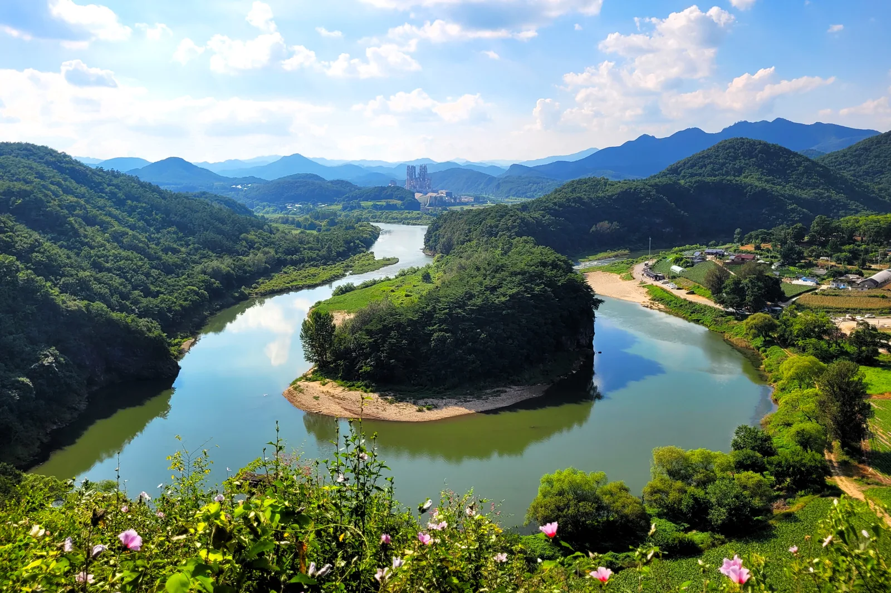
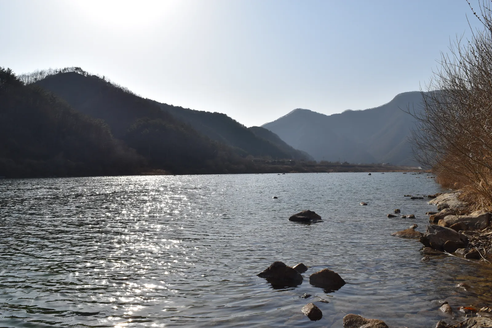
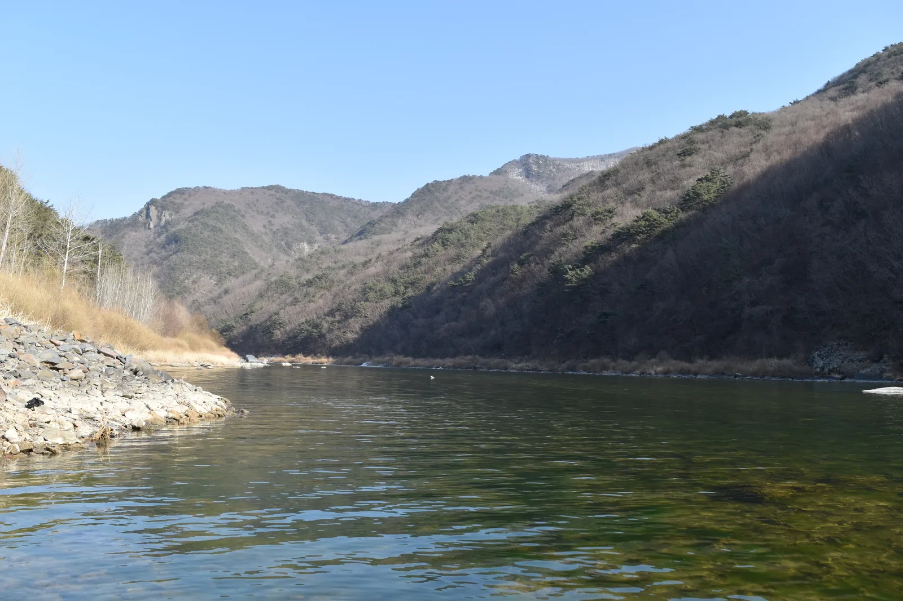

▲ 영월 선암마을 앞 평창강이 만든 한반도지형. 강물이 마을을 감싸며 실제 한반도와 닮은 윤곽을 그린다
강원 영월군 한반도면 옹정리, 선암마을 앞으로 흐르는 강물을 높은 곳에서 내려다보면 놀랍게도 실제 한반도 모양이 그대로 떠 있다. 동쪽이 높고 서쪽이 낮은 지형까지 닮아, 1999년 쓰레기매립장 반대운동 과정에서 마을 주민과 환경운동가에 의해 우연히 알려진 뒤 지금은 영월을 대표하는 사진 명소가 됐다. 그런데 이 지형을 만든 강과, 영월의 또 다른 명물인 래프팅이 열리는 강은 서로 다른 물줄기라는 사실은 의외로 덜 알려져 있다. 헷갈리기 쉬운 두 강의 정체부터, 래프팅 시즌이 끝나기 전 챙겨야 할 정보까지 정리했다.
1. 한반도지형은 사실 '서강'에 있다

▲ 선암마을 전망대에서 내려다본 한반도지형. 강물이 마을을 크게 휘감아 흐른다 ⓒ Wikimedia Commons
흔히 '영월 동강 한반도지형'이라 불리지만, 정확히는 평창강이 만든 지형이다. 평창강은 주천강과 합류하며 서강(西江)을 이루는데, 그 끝머리 선암마을 앞에서 크게 휘돌아 흐르며 삼면이 물로 둘러싸이고 동고서저(東高西低)인 한반도 모양의 침식지형을 만들었다. 즉 이곳은 동강이 아니라 서강 수계에 속한다. 영월군이 '동강'과 '한반도지형'을 함께 홍보하는 경우가 많아 두 곳을 같은 강으로 오해하기 쉽지만, 실제로는 영월 읍내 인근에서 동강과 서강이 만나 남한강 본류를 이루는 구조라는 점을 알아두면 헷갈리지 않는다.
| 항목 | 내용 |
|---|---|
| 한반도지형 소재 하천 | 서강(평창강과 주천강이 합류해 이루는 강) |
| 위치 | 강원 영월군 한반도면 옹정리 선암마을 |
| 발견 경위 | 1999년 쓰레기매립장 반대운동 과정에서 우연히 알려짐 |
| 래프팅 하천 | 동강(별도 수계, 정선~영월 구간) |
| 두 하천의 합류 지점 | 영월읍 인근에서 동강·서강이 만나 남한강 본류를 이룸 |
2. 전망대에서 보는 법 — 뗏목 체험도 있다
▲ 한반도지형과 뗏목 체험. 선암마을에서는 옛 물자 운반 수단이던 뗏목을 재현해 체험할 수 있다 ⓒ Wikimedia Commons
한반도지형은 강 건너 마을 쪽에서는 전체 윤곽이 잘 보이지 않고, 맞은편 산자락에 마련된 전망대에 올라야 제대로 감상할 수 있다. 짧은 산길을 걸어 올라가면 되는 정도의 난이도로 알려져 있어 가족 단위 방문객도 무리 없이 오를 수 있다. 선암마을 쪽에서는 한반도의 동해안에서 서해안까지, 약 1km 구간을 왕복하는 뗏목 체험도 운영해 강물 위에서 지형을 느껴볼 수 있다.
3. 동강 래프팅 — 시즌 끝나기 전 확인할 것

▲ 협곡 사이를 흐르는 동강. 한반도지형이 있는 서강과는 별도의 수계다 ⓒ Wikimedia Commons
영월과 정선에 걸친 동강은 래프팅으로 잘 알려진 하천이다. 다만 업체마다 안내하는 운영기간에 차이가 있어 주의가 필요하다. 한 래프팅 업체는 6월 1일부터 8월 31일까지를 운영기간으로 안내하는 반면, 다른 자료들은 성수기를 5월(혹은 4월)부터 10월까지로 소개하기도 한다. 즉 9월 방문객이라면 실제로 운항 중인 업체인지 반드시 사전에 확인해야 한다는 뜻이다. 디지털영월문화대전은 동강 래프팅에 대해 "한겨울에는 물이 얼어 운영이 불가능하며 10월부터 이듬해 5월까지는 운영이 중단된다"고 설명하고 있어, 통상 6~9월이 주된 운영 시즌으로 꼽힌다. 다만 실제 종료 시점은 업체마다 다르므로 9월 중하순 방문객은 특히 예약 전 확인이 필요하다. 코스는 통상 12~45km 구간에서 당일·1박2일 상품으로 나뉘고, 어라연을 지나는 구간이 대표 코스로 꼽힌다. 예약과 정확한 운영 종료일은 업체별로 직접 문의하는 것이 가장 확실하다.

▲ 동강 협곡 구간. 어라연을 지나는 래프팅 코스가 대표적으로 꼽힌다 ⓒ Wikimedia Commons
✅ 동강 래프팅, 가기 전 확인할 것
· 업체별 운영기간이 다름(6월~8월 말 안내 업체 vs 5월~10월 안내 자료 혼재)
· 9월 이후 방문이라면 예약 전 반드시 해당 업체 운영 여부 확인
· 코스는 12~45km, 당일/1박2일 상품으로 구분
· 어라연 경유 코스가 대표적
4. 동강사진박물관·동강생태공원 — 비 오는 날 대안
날씨가 좋지 않아 야외 활동이 어렵다면 동강사진박물관이 대안이 될 수 있다. 스스로 '한국 최초의 사진마을'을 표방하는 영월에서 2005년 문을 연 이곳은 1940~1980년대 한국 다큐멘터리 사진가들의 대표작과 동강국제사진제 참여 작가들의 기증작 등 약 1500여 점의 사진·고전 카메라를 소장하고 있다. 인근 동강생태공원은 동강 유역의 생태를 관찰할 수 있는 공간으로, 래프팅이나 한반도지형 관람과 묶어 반나절 일정으로 들르기 좋다.
5. 하루 코스 제안 — 헷갈리지 않게 도는 법
오전에는 선암마을 한반도지형 전망대에 올라 서강의 물돌이 지형을 감상하고, 이동해 동강생태공원이나 동강사진박물관에서 유역 생태와 사진 예술을 함께 둘러본 뒤, 오후에 동강 래프팅(운영 시기 내에 한해)으로 하루를 마무리하는 동선이 무난하다. 서강과 동강이 이름은 비슷해도 서로 다른 강이라는 점만 기억해두면, 영월 여행 동선을 짤 때 혼선을 줄일 수 있다.
✅ 영월 한반도지형·동강, 가기 전 체크리스트
· 한반도지형은 동강이 아니라 평창강·주천강이 합쳐진 서강에 위치(선암마을)
· 전망대에서 봐야 전체 윤곽이 보이며, 뗏목 체험도 가능
· 동강 래프팅은 업체별 운영기간 차이가 크므로 9월 이후 방문 시 사전 확인 필수
· 동강사진박물관·동강생태공원은 우천 시 대안 코스로 적합
· 서강·동강은 영월읍 인근에서 합류해 남한강 본류를 이룸